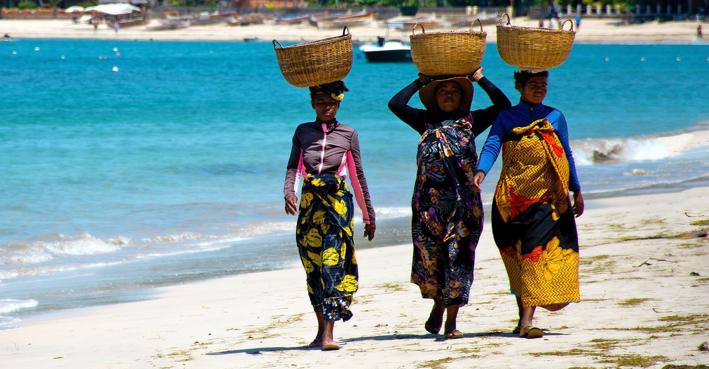
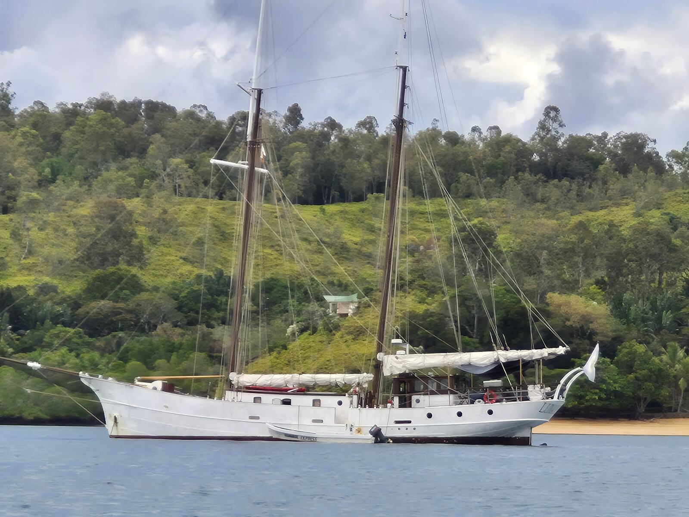
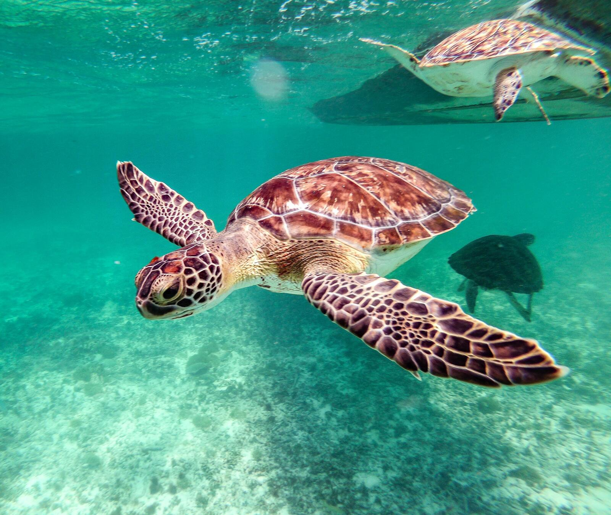
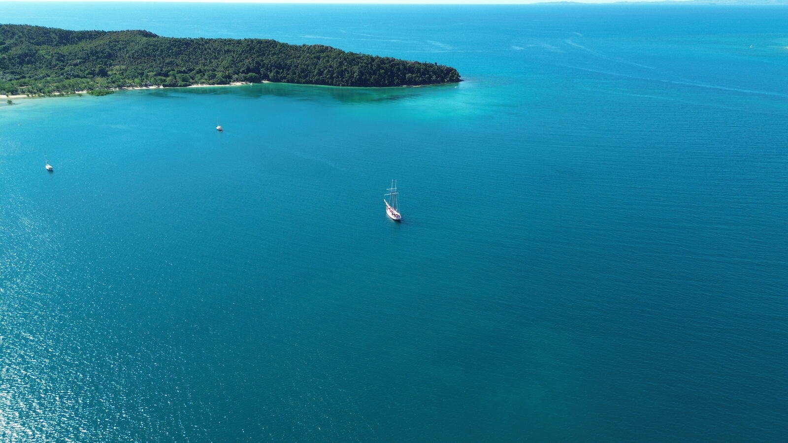
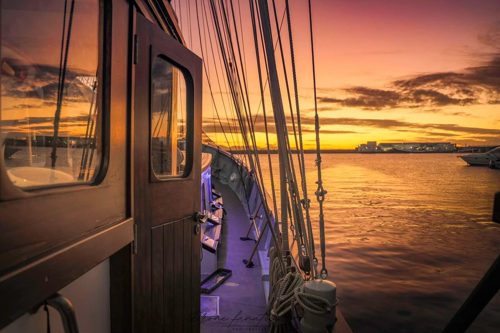
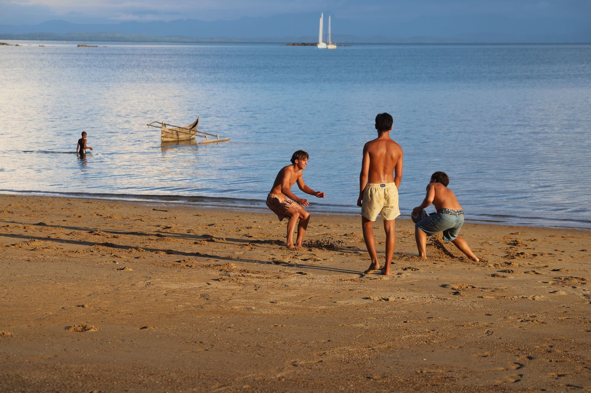

A week around Nosy Be.
Calm water, short hops between islands and a new anchorage most days. The whole ship is yours for seven nights or more.
You pick the activities. The captain picks the anchorages.
Our private charters stay among the islands around Nosy Be, where the water is calm and the next anchorage is never far away. There is no set itinerary.
Tell us what your group loves, whether that's reefs, lemurs, empty beaches or learning to sail, and each day is planned around the weather, the tide and your mood.

The islands around Nosy Be.
These are the places the captain usually chooses from.

Nosy Tanikely & Nosy Komba
Turtles and reef fish in the marine reserve at Tanikely, then black lemurs and the beach market on Nosy Komba.

Nosy Iranja & Russian Bay
The sandbar that joins two islands at low tide, a lighthouse by Gustave Eiffel and a sheltered bay with a shipwreck legend.

The Mitsio Islands
North of Nosy Be. Basalt columns, empty beaches and some of the clearest water in the region.

The Radama archipelago
Four quiet islands to the south with coral reefs, hidden coves and good fishing.
Sail in the morning, swim by lunch.
No two days are the same, but most follow the wind and the tide something like this.

Coffee on deck while the anchorage wakes up.
Breakfast, then sails up for the next island.
Drop anchor off a reef to snorkel, kayak or fish.
Lunch on deck: fresh fish, tropical fruit, local spices.
Go ashore for a village walk, a market or the lemurs of Nosy Komba.
Sundowners on the aft deck, then a fish barbecue or a braai on the beach.
Families and friends.
One group of up to 11 guests. Short passages and calm water make a week around Nosy Be ideal for younger children and first-time sailors.
Fly straight into Nosy Be.
Fly into Fascene Airport on Nosy Be, with connections from Antananarivo, Johannesburg and other regional hubs. We'll meet you there.
Planning time ashore too? See Nosy Be tours and lodges on The Madagascar Collection
Ten days down the coast to Mahajanga.
The Signature Voyage sails south past Nosy Iranja and the Radama Islands to the limestone bays of Moramba and the port of Mahajanga.

Plan your week in Nosy Be.
Send us your dates and group size. Please try to be flexible. Availability is limited. We usually reply within a couple of hours.